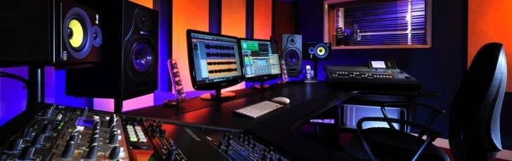

Timothy K. Stuart
Owner/Head Engineer/Head Producer/Everything
Tim Stuart is the Owner/Head Engineer/Head Producer/Slave
Driver here at ANTI_TWIN Studios...seriously...the guy makes
me do everything. He is a musician fluent in multiple instruments
and has been part of multiple professional music groups including
the world-famous and super tangy ANTI_TWIN, the patron saint band
here at ANTI_TWIN Studios. Tim has over twelve years experience in
audio engineering and even recorded and produced the music for
ANTI_TWIN. Tim is our chief engineer and carries our team...
literally...he carries us everywhere. We save so much money on gas.
Actually Tim is the only guy who works here so...he's important.
Timothy K. Stuart
Things and Stuff
Tim Stuart is the Owner/Head Engineer/Head Producer/Slave
Driver here at ANTI_TWIN Studios...seriously...the guy makes
me do everythi...hang on...I'm having a sense of Deja vu.
Bob Bahama
Resident Bar Tender
The guy makes drinks. It's pretty cool.
Potato
Potato
Potato
In the world of recording, quality is the key and
our incredible staff has an ear for quality. With over
131,400 combined hours of experience (trust me...it's a
long time) you can rest assured that the friendly and talented
ANTI_TWIN staff will deliver the highest quality and most kick-ass
sound you could ever hope for.